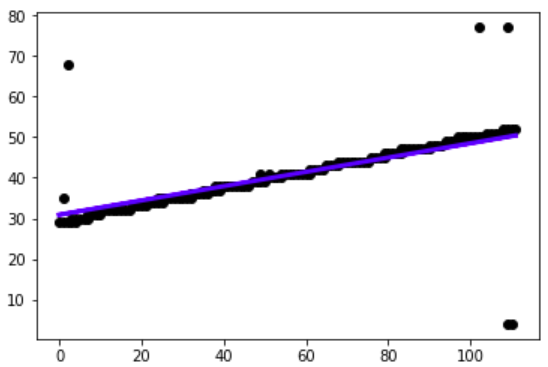
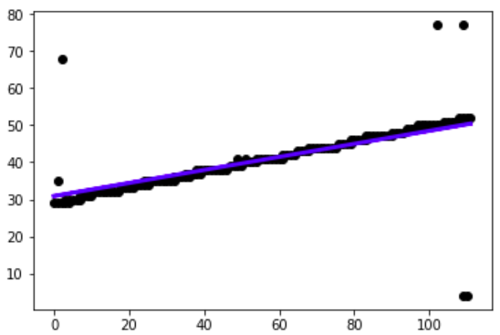

Video Transition Detector v0.0.1
Introduction
This is a tool built on python3.6 for video transition detection.
Currently we have made atuo detection for wipe transition.
We apply pipenv to manage the python package below:
- opencv: for image and video processing
- matplotlib: for linear regression debug
- numpy: for matrix manipulation
- PIL: for showing image from opencv in tkinter
- tkinter: for GUI
Build Guide
# install depend packages pipenv install # run program python3 main.py
Presentation Video
Feature list
- Video Transition Detection Based on Spatio Temporal Image (STI)
- Copy pixel
- Generate STI with middle column / row from origin frame of videl.
- Histogram Difference
- Apply chromatic color sampling
- Apply histogram mechanism
- Histogram Intersection Method
- IBM's Histogram Distance Method
- Apply linear regression for auto detection
Screenshots of Final Product
Implementation Details
STI based on Copy Pixel
The implementation of copy-pixel is to build up STI, whose number of cols is the number of frames and rows is the copy of mid row/col of frame,
when wipe transition happens in video, say horizontal wipe, we can see an apparent gap in STI if we sample the mid col.
It is easy but strongly relies on human's visual recognition.
STI based on Histogram Difference
Compute Chromaticity
As is mentioned in the project requirement document, chromaticity () of image is much more characteristic.
We implements a function that convert RGB channel into chromaticity.First
We do this in per pixel level. This can be done by utilizing matrix element-wise operation provided by numpy, which can speed up the excution.
We first compute the sum of RGB, and divide R, G respectively.
def bgr_to_rg(self, image_bgr): bgr_sum = (image_bgr[:, :, 0] + image_bgr_copy[:, :, 1] + image_bgr[:, :, 2] + 0.0000001) # red image_rg[:, :, 0] = image_bgr_copy[:, :, 2] # green image_rg[:, :, 1] = image_bgr_copy[:, :, 1] return image_rg
Calculate Histogram
We calculate histogram by utilizing cv2.calcHist() function in OpenCV. We provide the channel we want to compute, R (0) and G (1), the bin size of the histogram is .
cv2.calcHist([image_rg], [0, 1], None, [bin_size, bin_size], [0, 1, 0, 1])
Intersection Method
We use Intersection to measure the similarity of two histograms.

(Image referenced from here)
for f in range(I.shape[1]): I[f] = np.sum(np.minimum(H[f + 1], H[f])) if I[f] < threshold: wipe_positions.append(col) wipe_frames.append(f)
We use element-wise minimum opeartion provided by numpy to compute the instersection. And iterate for each pair of adjacent frame of the video.
If the intersection is smaller than a threshold value, we determine there is a transition between the two frames
IBM's Method
This method is so-called HQDM(Histogram Quadratic Distance Measures). The main idea of it is to calculate the distance between two histograms, hq and ht by using the equation
Here A is a predefined matrix where aij denotes the color the similarity between color of bin i and color of bin j. It is a symmetrical metrix with all 1 on diagonal and becomes smaller to end of rows and cols. Obviously, The more similarity, the more weight of count difference contributes to the histograms difference.
# generate A metrix a_m = np.zeros((n ** 2, n ** 2), dtype=np.double) for i in range(n ** 2): for j in range(n ** 2): xi = i // n yi = i % n xj = j // n yj = j % n a_m[i, j] = 1 - math.sqrt((xi / n - xj / n) ** 2 + (yi / n - yj / n) ** 2) / math.sqrt(2) # calculate difference, row sampling for row in range(height): histogram_row = self.to_histogram(frame_chroma[row, :, :], n) v = histogram_row.reshape(histogram_row.size) if f == 0: histogram_vector_table.append(v) else: v_last = histogram_vector_table[row] z = np.abs(v - v_last) d_2 = (np.asmatrix(z) * np.asmatrix(a_m) * np.asmatrix(z).T)[0, 0] histogram_vector_table[row] = v[:] sti[row, f - 1] = d_2
Linear Regression
After we compute the difference of the histogram for frame of each column / row. We get a 2D array, with one axis is frame and the other is column / row. This 2D array is either 0 or 1 because we classify them by threshold value. Value 1 means we have determined there is a transition at that frame and that column / row.
In order to get the start time and end time of the transition, and filter noise, we use linear regression to generate a line. And use this line as the transition line.
The principle of linear regression is to find a line that minimize the square root error for each points on the graph.
The fomular of linear regression is (from [Wikipedia]
(https://en.wikipedia.org/wiki/Linear_regression))
 

Based on the modelled line from the 2D array, we can automatically determine the start frame and end frame of transition.
For STI from columns, we give the column 0, and width-1 as input to the line function, we get the output as frame. One output is the start frame number, this other is end frame number.
Problems and solutions
opencv
opencv use BGR color format while matplotlib use RGB color format. Thus if we display the opencv image using matplotlib , we will get a wrong color image.
The solution is convert BGR to RGB before displaying using
image = cv2.cvtColor(image, cv2.COLOR_BGR2RGB)
pyplot
RuntimeError for using matpotlib on Mac
RuntimeError: Python is not installed as a framework. The Mac OS X backend will not be able to function correctly if Python is not installed as a framework. See the Python documentation for more information on installing Python as a framework on Mac OS X. Please either reinstall Python as a framework, or try one of the other backends. If you are using (Ana)Conda please install python.app and replace the use of 'python' with 'pythonw'. See 'Working with Matplotlib on OSX' inthe Matplotlib FAQ for more information.
Solution: relevant github_issue:
import matplotlib as mpl mpl.use("TkAgg") import matplotlib.pyplot as plt
And there iscConflict between matplotlib && cv2.imshow. The RuntimeError above occur even if solution applied. Try to use only one of them (matplotlib) to show some image.
Discussion
About Project
How hard was this project?
The project is easy. The most difficult part is to understand what's the project requirement.
The coding part does not have too much difficulty because opencv and numpy provide useful libraries.
State briefly how would you improve this project?
Give less hint and let students to come up with their own solution to detect video transitions, which encourages more creative work.
Any ideas for a different project at the same difficulty level? Would you enjoy more difficulty? Less?
An different project proposal is, given many video clips, which can be merged into a complete video. Write a program that can automatically merge videos for you.
We enjoy more difficulty!
Is chromaticity really improve the characteristics of image?
One main drawback we found is chromaticity enlarges the noise on dark image. To illustrate this idea. There are two images below: one with RGB(0,0,0), and another (1, 0, 0) (RGB value from 0 to 255).


These two images is indistinguishable for human, but in chromaticity one is rg(0, 0) and another rg(1, 0). Their intersection is 0, which means they are totally different.
So the chromaticity enlarges the noise in dark image because the denominator (R+G+B) is too small. It will regard some minor change in dark images as transition.
Further Improvement
Idea about Wipe in diagonal direction
The program currently can detect horizontal wipe and vertical wipe automatically. And we have considered to move it forward to other direction of wipe. For wipe in left-up direction, we can decompose the direction into left and up. In this way, the wipe could be detected using hitogram difference via both row and col sampling. However, the challenge is, in most condition, as it doesn't wipe in one direction, the change of row and col between frames can be relevantly small.
One solution is to rotate the frame, in some radians, then wipe can be horizontal or vertical again. Another solution is to sampling with smaller frequency. Say we only sample the frame numbered 0, 10, 20, 30... Then the difference of histogram can be detected with the methods above. However, it requires the video itself has a lot frames to sample.
About GUI
As for time limit, we choose tkinter for GUI. But tkinter is relevant unconsistant across platforms and really hard to orgnize the layout. Maybe a more elegant way is to use Django or Vue+Flask to make GUI in browser.
A general solution for any transition types
STI of columns and rows is only suitable for vertical and horizontal wipe. If we use the compare frame itself, we can detect all kinds of transitions.
The idea is compare the difference of adjacent image. If the difference is greater than a threshold, we determine that is transition. The method of comparision can be histogram, or feature points matching.